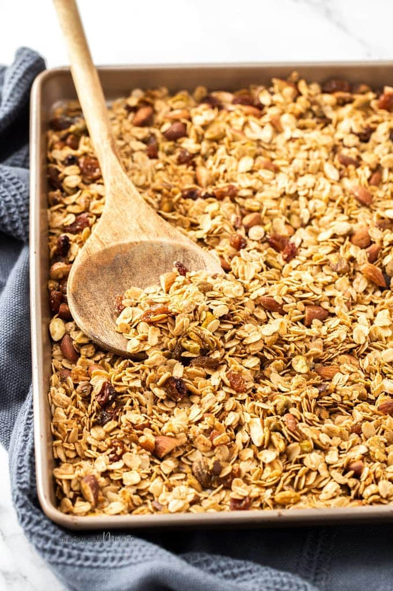

Low Calorie Maple Oat Topping

Description
A low calorie maple oat recipe that can be used as a topping for yogurt, ice cream, or ate alone!
Ingredients
- 40g oatmeal
- Sugar Free Maple Syrup, to taste
- 2 tsp. cinnamon
- Honey (Optional)
Steps
- Add your oats into a hot pan, and allow them to toast until there is noticable browning
- Add and mix in your cinnamon, and allow it to toast for a minute before adding in your sugar free
maple syrup
- If you would like some added stickiness, add in some honey and mix with the oats. Do not leave on pan
too long to prevent burning
- Remove from pan and enjoy!
Original recipe by myself!
Home